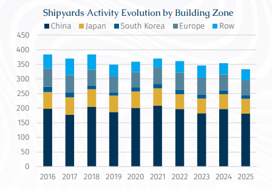
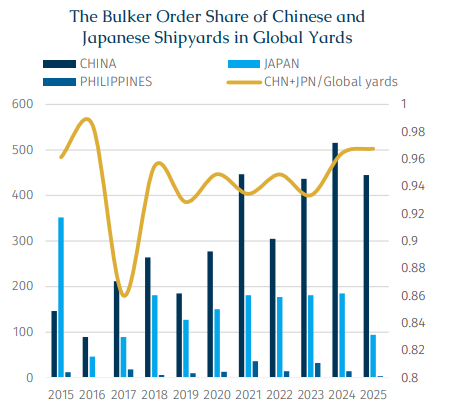
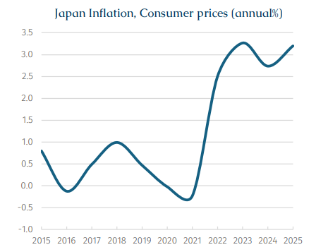

In the chapter of the recently released BRS Annual Review of Shipping and Shipbuilding Markets 2026 entitled "What Does It Take to Become a Shipbuilding Country", it is noted that, in order to counteract the dominance of China, as well as promoting domestic shipbuilding, the US is also looking to nurture invest in the shipbuilding industry in its allies.
Japan, as one of the key US allies, also holds a significant position in the global shipbuilding market. At the end of last year, the Japanese government elevated shipbuilding to a core national security sector under its “Comprehensive Economic Measures for Realizing a Strong Economy.” In response, the Ministry of Land, Infrastructure, Transport and Tourism (MLIT) introduced a dedicated “Shipbuilding Industry Roadmap” and established a “Shipbuilding Industry Revitalization Committee,” aiming to accelerate structural transformation and support the sector’s long-term development.
As an island nation heavily reliant on seaborne imports of energy and food, Japan’s economic stability remains closely tied to maritime transport with the industry supporting regional economies and employment. However, in terms of market dynamics, Japan’s shipbuilding output has declined in recent years, falling from 24.6 million Dwt in 2019 to approximately 15.54 million Dwt in 2025. Amid longer delivery lead times and rising construction costs, domestic capacity is increasingly unable to meet shipowners’ requirements, leading to a gradual outflow of orders overseas. Japanese shipowners have increasingly turned to Chinese yards, especially in the bulk carrier segment where design capabilities are now broadly comparable, while prices are around 10% lower.
Since last year, this trend has accelerated notably. Japanese shipowners Fukujin Kisen, in cooperation with Itochu Corporation, placed an order for two Newcastlemaxes at a Chinese yard last November. Meanwhile, Doun Kisen, a long-established Japanese owner, entered the Newcastlemax segment for the first time, ordering three vessels from Xiangyu Shipyard in China, marking the yard’s first contract for this type. Meanwhile, Doun Kisen has already contracted four Kamsarmaxes at Hengli Heavy Industry, with a unit price of approximately $37 mln dollars and delivery scheduled for 2027. This represents Hengli’s first order from a Japanese shipowner. Importantly, this shift is no longer limited to bulk carriers. Breakthroughs have also been observed in technically demanding gas vessel segments, highlighting that, alongside rapid improvements in construction quality and delivery reliability, Chinese shipyards are increasingly being considered by Japanese shipowners as a viable option even for high value-added vessel types. Coincidentally, in early April, Greek shipping company Erasmus, which had previously placed all its newbuilding orders with Japanese shipyards, turned to a Chinese shipyard for the first time when ordering four Kamsarmaxes at Jiangsu New Hantong Ship Heavy Industry.

Japanese shipyards’ capacity is shrinking. Over the past decade, the number of active shipyards in Japan have fallen so that by end-2025 there were only fifty. In contrast, among its major competitors, the number of active shipyards in China and South Korea has remained relatively stable. In terms of orderbook share, Japan’s position among the world’s top three shipbuilding nations has continued to erode over the past decade. As discussed in the BRS Annual Review China dominates the global market, accounting for approximately 67% of the total orderbook in 2025. South Korea ranked second with a share of 12%, while Japan lags behind at 11%. From a vessel type perspective, Japan’s orderbook remains largely concentrated in bulk carriers, tankers and LPG carriers, reflecting its long-standing development path centered on standardized vessel designs and incremental innovation. In comparison, China’s dominance is driven by its unmatched scale, highly competitive pricing and rapidly advancing technological capabilities, while South Korea continues to consolidate its leadership in high value-added segments, particularly LNG carriers.

Data show that China and Japan continue to dominate the bulk carrier construction market, jointly accounting for approximately 94% of global bulk carrier orders over the past decade. Over 2020-24, Japan secured an average of around 174 bulk carrier orders per year. However, in 2025, as higher-value vessel segments, including tankers, gas carriers and RoRos absorbed a larger share of shipyard capacity, Japan’s bulk carrier orders declined sharply to 94 units, representing an annual drop of 49%.
From a vessel class segment, small-sized units (25,000–68,000 dwt) accounted for as much as 71% of Japan’s bulk carrier orders last year. Taking Oshima Shipbuilding as an example, the yard that secured the largest number of bulk carrier orders (39 vessels) during the year while it cannot match the scale or market share of major “mega groups” such as Imabari Shipbuilding and Japan Marine United, nor compete with the diversified and highly globalized operations of Tsuneishi Shipbuilding, it remains a key mid-sized pillar within Japan’s shipbuilding industry. In particular, Oshima has built a strong reputation and technical edge in niche segments, making it a notable “technology-driven” player in the market. A closer look at its orderbook composition shows that small bulk carriers accounted for 82% of its total, with Handymaxes (40,000–49,999 dwt) representing roughly half, while the remainder primarily consisted of Ultramaxes and Supramaxes. Notably, in January this year, Lloyd’s Register granted Approval in Principle to Oshima’s multi-fuel-ready Ultramax design, highlighting the yard’s continued investment in environmentally advanced vessel technologies and its proactive positioning in the transition toward greener shipping.

Rising raw material prices and increasing labor costs are jointly pushing up ship prices. In the post-pandemic era, inflationary pressures in Japan continue to escalate. According to data from the International Monetary Fund, Japan's annual inflation rate reached 2.7% as of 2024. As prices continue to rise faster than wages, the shipbuilding industry is seeing a labor exodus toward sectors offering more competitive compensation. For example, TSMC's plant in Kumamoto offers wage levels approximately 1.5 times higher than those of local shipyards, directly intensifying talent attrition in the industry. Meanwhile, an aging workforce has become increasingly prominent, with many skilled workers nearing retirement, further exacerbating the labour shortage. In response to these challenges, the Japanese government has introduced measures. It has set a goal to double shipbuilding capacity to 18 million gross tonnes（circa 23.8 mln Dwt）by 2035, supported by approximately 1 trillion yen ($6.4 billion) in public and private investment. The roadmap also aims to reduce construction costs by 10% and improve productivity by 25%.
Shipyard consolidation is underway to enhance competitiveness through increased economies of scale. Imabari Shipbuilding has increased its stake in Japan Marine United (JMU) to 60%, making it a subsidiary, thereby strengthening procurement synergies and improving decision-making efficiency. Meanwhile, Mitsui E&S has gradually scaled back its operations, closing its Chiba shipyard and transferring most of its new shipbuilding business to Tsuneishi Shipbuilding. Meanwhile, Sasebo Heavy Industries exited the new shipbuilding sector in 2022, shifting its focus to ship repair and machinery manufacturing.
On the labor front, the proportion of foreign employees at Japanese shipyards has risen from nearly zero a decade ago to approximately 20% today. Meanwhile, the industry is strengthening partnerships with local universities to secure a stable talent pipeline.
On the geopolitical front, Japan and the US signed a shipbuilding cooperation memorandum of understanding last October, deepening collaboration in areas such as capacity expansion and investment in the US. This move provides Japanese shipbuilders with potential opportunities to secure US Navy repair and maintenance contracts.